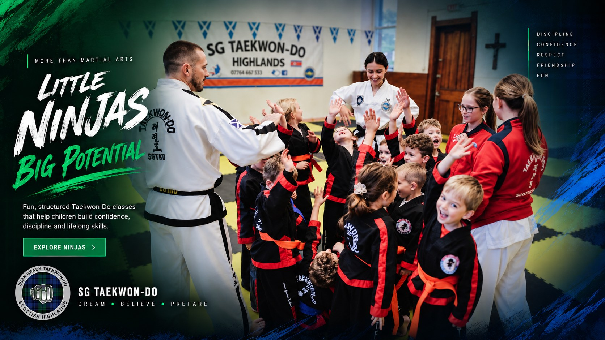

Fun, energetic and structured sessions designed to introduce young children to the foundations of Taekwon-Do through age-appropriate activities.
Our Ninjas classes provide a fun and positive introduction to Taekwon-Do, helping young children develop physical skills, confidence and positive habits in a structured environment.

Ninjas training is designed to help children develop important physical, social and personal skills while having fun.
Encourage children to try new activities, overcome challenges and celebrate their progress.
Develop listening skills, concentration and the ability to follow simple instructions.
Build balance, movement, agility and body awareness through fun age-appropriate activities.
Introduce the values of respect, discipline, perseverance and positive behaviour.
Every session combines movement, learning and fun in a structured environment designed for young children.
Fun movement activities to get everyone ready for training.
Activities designed to develop balance, coordination and body awareness.
Children are introduced to basic Taekwon-Do movements in an age-appropriate way.
Fun pad and movement activities help develop timing, coordination and confidence.
Active games help reinforce movement, listening and teamwork skills.
Sessions finish positively, giving children a sense of achievement from their training.
Taekwon-Do can give young children more than physical activity. It can provide opportunities to develop confidence, discipline and positive habits that can support them both inside and outside the dojang.
Sessions keep children moving while introducing them to the foundations of martial arts.
Children are encouraged to participate, try new things and celebrate their individual progress.
Training introduces children to routines, focus, discipline and listening through enjoyable activities.
Give your child the opportunity to discover Taekwon-Do, make new friends and develop skills in a fun and supportive environment.
ASK ABOUT JOINING